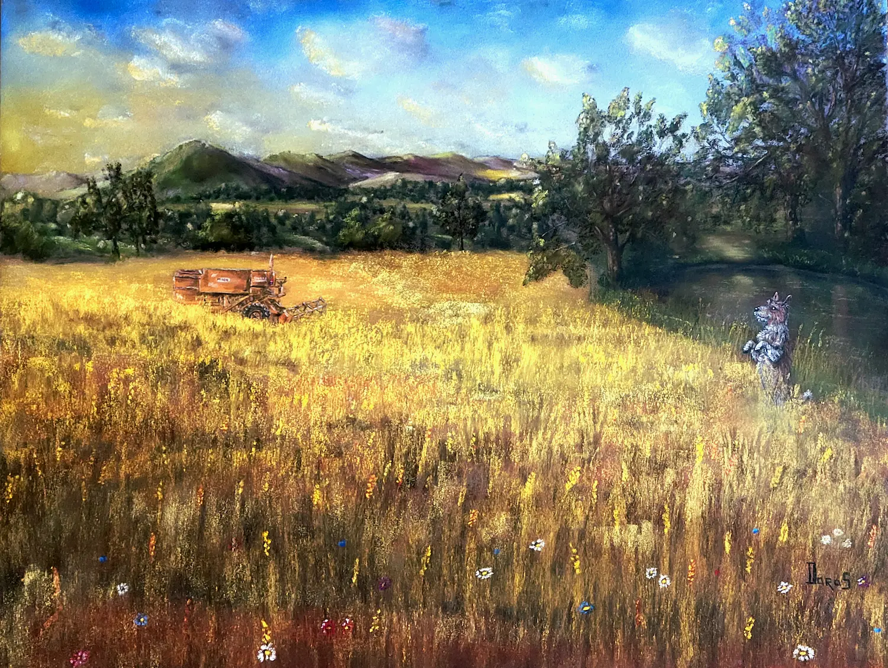

Paysage
Mirza au champ de blé
Achevé en 2026, Mirza au champ de blé est un pastel sec chargé de terre et de tradition familiale. J’ai réalisé ce tableau à la demande d’un ami paysan-boulanger. Amateur de son travail et de son pain, je partis en reconnaissance à travers son champ et découvris des variétés anciennes et robustes, comme le Rouge de Bordeaux et le Poulard. Au toucher et à la prise en main, je ressentis la force de ces céréales et celle de cette terre. J’intégrai également Daisy, sa moissonneuse, et bien évidemment Mirza, sa petite chienne. Comme une salutation au soleil couchant, j’eus beaucoup d’émotion à réaliser ce pastel.
Demander des informations →← Retour à la galerie